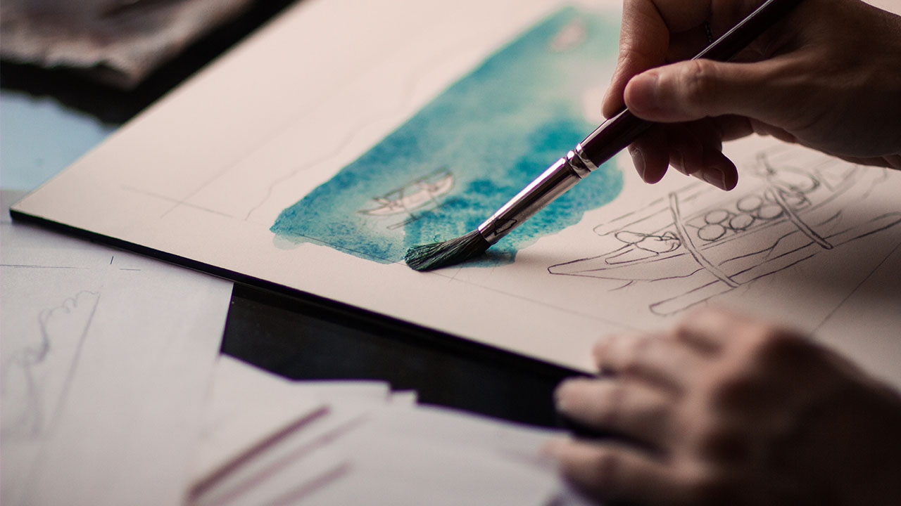
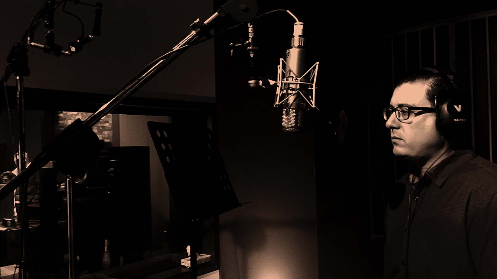

Faire un film
Tu as toujours voulu savoir comment réaliser un film ? Cela tombe bien, cette page te montre étapes par étapes comment sont réalisés les plus grands films d'animations 3D.
Etape 1 :
Créer une bible littéraire. Il s’agit d’un document qui regroupe toute les informations sur l’univers et l’histoire du film, ainsi un résumé physique et psychologique de chaque personnages (âge, caractère, ses hobby...)


Etape 2 :
Dessiner les personnages en 2D sous toutes ses angles, qu’ils soient allongé, debout, à genoux mais aussi toutes ses humeurs: heureux, triste, en colère. Tout cela pour que le dessin des personnages en volume dans l’animation reflète leurs personnalités.

Etape 3 :
La modélisation 3D :
Modéliser les personnages en 3D grâce au croquis réalisé en 2D, mais attention les couleurs ne leurs sont pas encore appliqué cela arrivera plus tard lors de la réalisation du film.


{kind=link}
Etape 4 :
Créer les textures. Comme avec la modélisation 3D les textures sont d’abord créer sur papier puis adapté sur ordinateurs.
Etape 5 :
Faire une recherche de documentation. Cela va servir à bien modéliser les différents objets présent en 3D dans les scènes. Pour les bâtiments, les personnes chargées de modéliser les lieux sont aidés par des d’architectes pour que les décors soit le plus fidèle possible à la réalité.

Etape 6 :
Création du story-board, une une représentation visuelle de ce que sera le film et qui prend la forme de différents croquis.

En assemblant le story-board, cela va permettre aux monteurs de faire une animatic (1ère version du film mais uniquement avec les dessins réalisé sur papier afin d’avoir un premier rendu du film).
Animatic du clip Feel Good - IncGorillaz.
Source : Gorillaz - Youtube
Etape 7 :
Créer les scènes en 3D. Grâce à l’animatic l’équipe chargée de faire le film d’animation connaît les différents plans de la caméra et peuvent ainsi commencer à modéliser les différent point de vue.

Etape 8 :
Ajouter une ambiance lumineuse. Une fois l’animation fini et les différentes textures appliquées c’est au tour de la lumière. Celle-ci va s’adapter au différents lieux (plus sombre, plus claire, plus terne…) afin de faire ressortir le personnage et ainsi créer des ombres, des reflets et donner du relief à la scène.

Etape 9 :
Donner des voix. L’un des dernier travail à réaliser va être de donner une voix à tous ces personnages.

Etape 10 :
Montage du film. La dernière étape va être le montage finale du film. Il va falloir faire concorder les voix tourner précédemment avec l’animation pour pouvoir avoir le film enfin terminé.